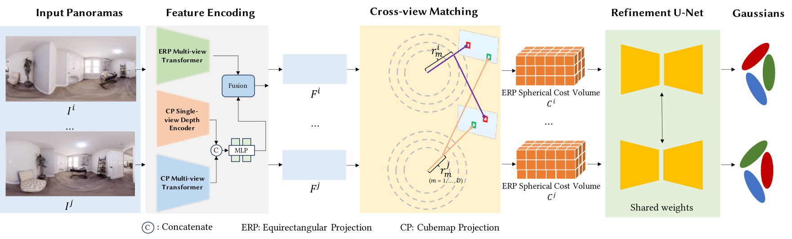

Method

Our Splatter-360 processes 360° panoramic images using a bi-projection encoder that extracts features from both equirectangular projection (ERP) and cube-map projection (CP) through multi-view transformers. These features are used for spherical cost volume construction, and multi-view matching is performed between the reference and source views in spherical space. Next, a refinement U-Net is applied to enhance the spherical cost volume, yielding refined cost volumes and more accurate spherical depth estimations. These refined outputs are then fed into the Gaussian decoder, which produces pixel-aligned Gaussian primitives for synthesizing novel views.


BibTeX
@article{panogrf,
title={Splatter-360: Generalizable 360◦ Gaussian Splatting for Wide-baseline
Panoramic Images},
author={Zheng Chen and Chenming Wu and Zhelun Shen and Chen Zhao and Errui Ding and Song-Hai Zhang},
year={2024},
}